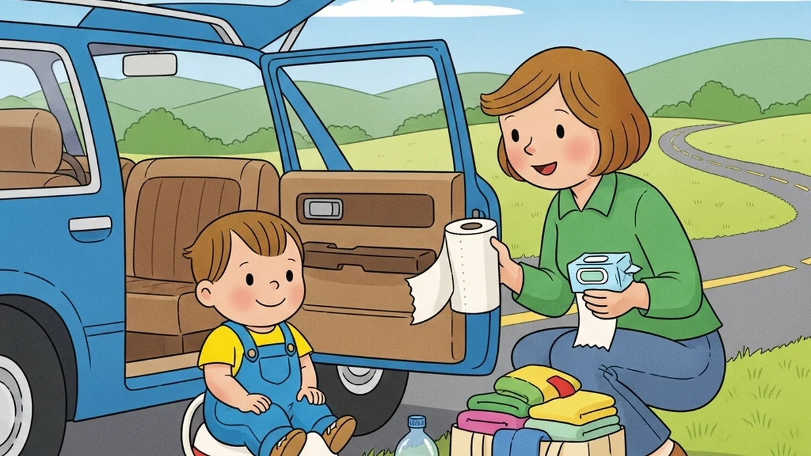
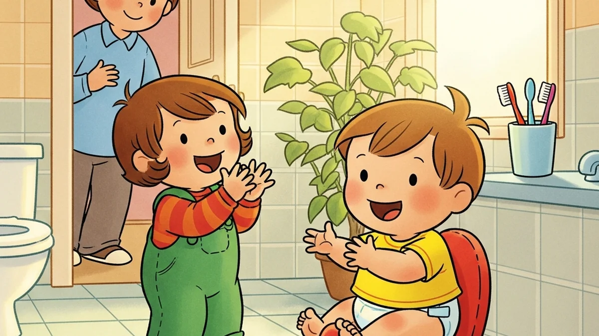
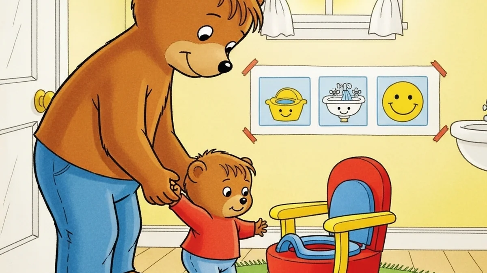
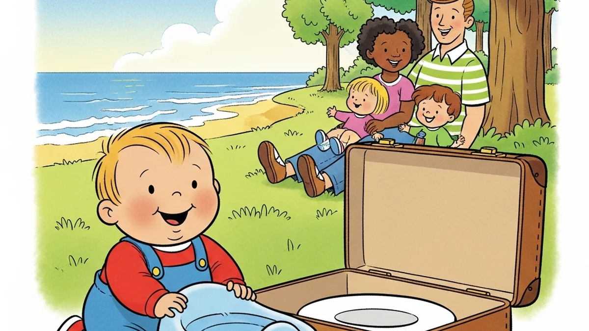
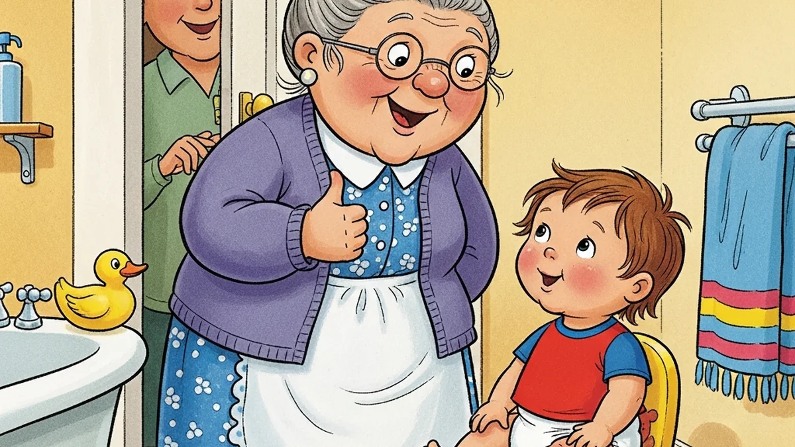
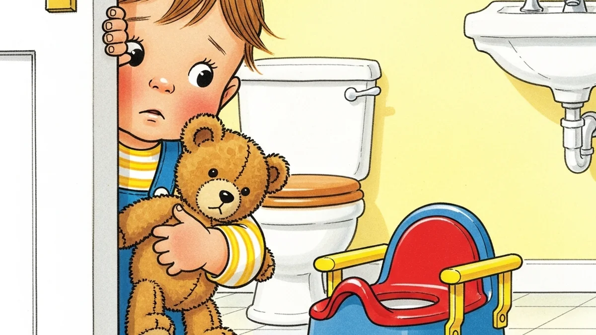
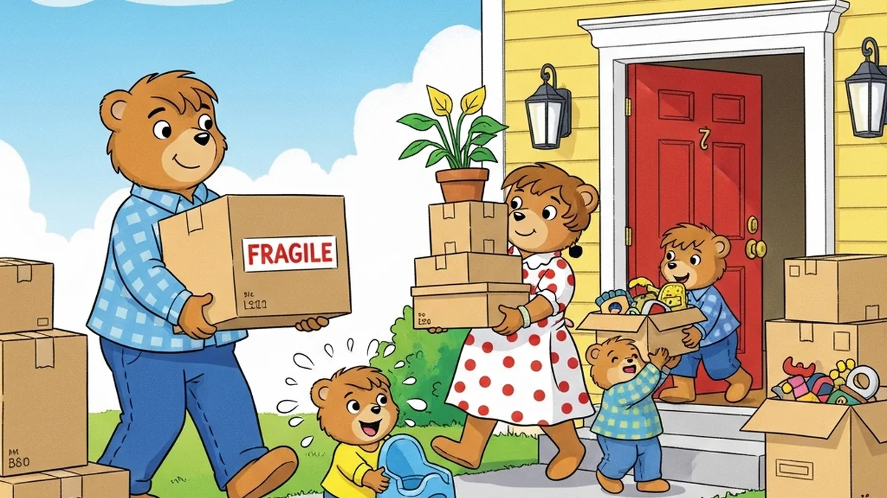
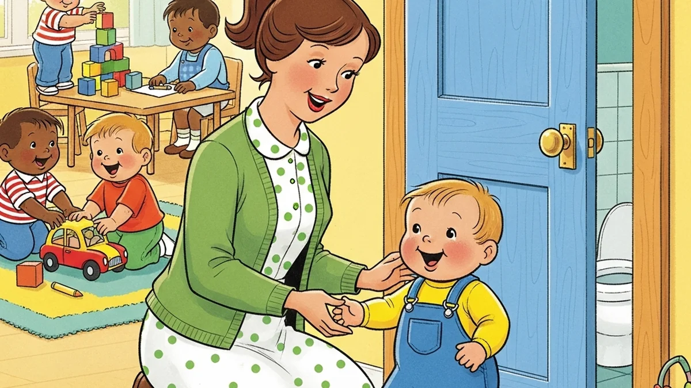
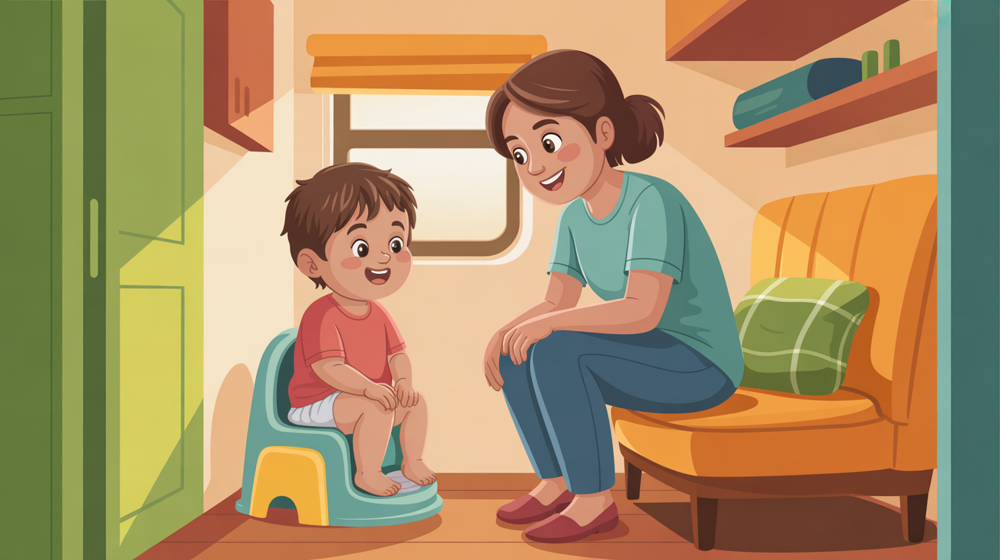

Potty training solutions for unique circumstances: small spaces, travel, adoption, special needs, and more.

Facing a long drive with a potty-training toddler? Here's how to plan stops, pack the car, and handle accidents without losing your progress.
April 20, 2026
Second-time potty training feels different for a reason. Here's what changes, what doesn't, and how to train your second child without repeating first-kid mistakes.
April 19, 2026
Potty training an autistic child takes extra patience and the right sensory strategies. Here's what actually works, from visual schedules to bathroom setup.
April 14, 2026
Headed on vacation with a potty-training toddler? Here's how to keep progress on track with smart packing, routine tricks, and zero stress.
April 8, 2026
Grandma puts the diaper back on. Grandpa says you trained at 18 months. Here's how to get every caregiver on board with your plan.
April 3, 2026
Your anxious toddler freezes every time you mention the potty. Here's how to build their confidence slowly and make real progress without the pressure.
March 30, 2026Should you train both twins at once or start with whoever's ready first? Here's how to handle different readiness levels without the comparison trap.
March 21, 2026
Moving with a potty-training toddler? Here's how to keep consistency when your whole world is in boxes, plus what to do if regression hits.

Your kid's trained at home but having accidents at daycare. Here's how to align with your provider so potty training actually sticks in both places.

Potty train without the bottomless method. 5 practical strategies for apartments, campers, and small homes—real solutions for space-constrained parents.